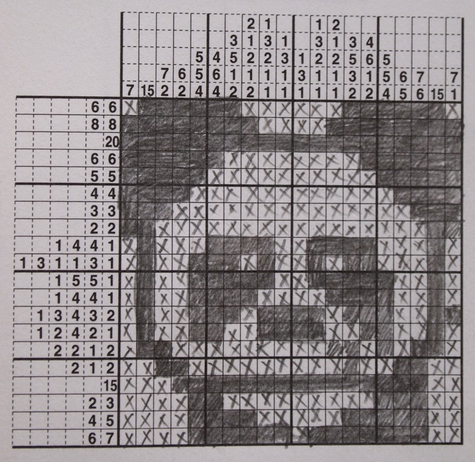
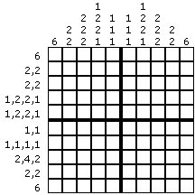

Un poc sobre Hanjie
Les primeres aparicions d’aquest joc va sorgir en mans de Tetsuya Nishio que gràcies a l'editor de gràfics Non Ishida va ser inspirat per poder crear aquest lloc.
Més endavant el mateix Japó va començar a implementar aquest puzles en 1988 amb el nom de Window Art Puzzles. Un poquet més tard, en 1990, James Dalgety va inventar els nonograms i la pròpia revista del país (The Sunday Telegraph) va començar a publicar-los a la seva revista cada setmana. A més varen sacar un llibre anomenat “Book of nonograms” que va arribar a països com Suècia o Estats Units.
I finalment en 1998 The Sunday Telegraph va fer una competició per tal d'elegir un nou nombre a aquest joc. Els lectors van elegir Griddlers.
Passat els anys van arribar a sortir fins a la gameboy de Nintendo que varen sacar vàries sagues, una d'elles amb el nom de Picross. Aquesta la varen anar actualizant i sacant diferents versions. I fins a arribar al dia d'avui, estes a les revistes del països com EE. UU., Regne Unit, Alamània, Països Baixos, Itàlia, Hongria, Finlàndia, Ucraïna, entre altres.
Regles del joc
Hanjie, també anomenat Griddlers, Piccross o nonograma és un tipus de puzle que consisteix en aconseguir veure una imatge oculta anant colorant les cel·les de la taula o la quadricula.
En aquesta quadrícula ens encontrarem als marges una sèrie de nombres (a les columnes i a les files) que ens determinaran la quantitat de quadrats consecutius que hi ha en la respectiva fila o columna. Per tant haurem d'anar aconseguint esbrinar la posició correcta d’aquests quadrats per tal d’esbrinar el dibuix o la imatge oculta final.
Controls
Click esquerr per descobrir un quadrat.
Click dret per marcar amb una X.
F2 per reiniciar la partida i tornar a començar.
Ctrl + z per desfer el moviment.
Ctrl + shift + z per refer el moviment.